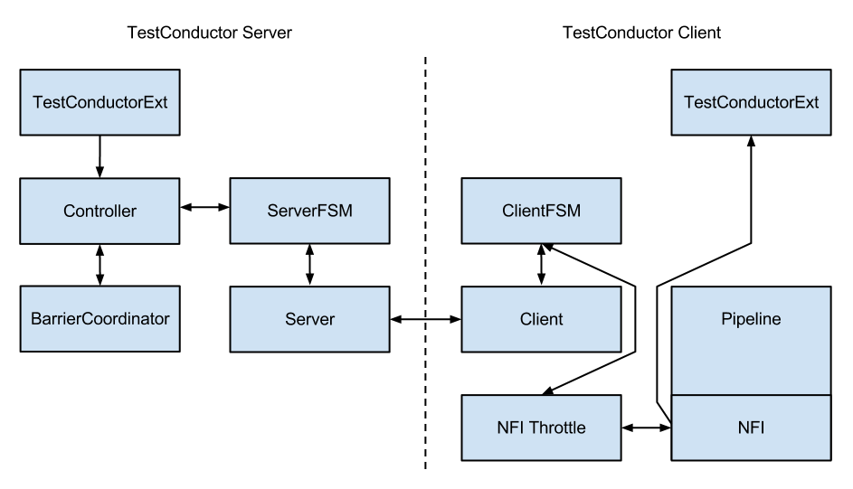

Multi Node Testing
Multi Node Testing Concepts
When we talk about multi node testing in Akka we mean the process of running coordinated tests on multiple actor systems in different JVMs. The multi node testing kit consist of three main parts.
- The Test Conductor. that coordinates and controls the nodes under test.
- The Multi Node Spec. that is a convenience wrapper for starting the
TestConductorand letting all nodes connect to it. - The SbtMultiJvm Plugin. that starts tests in multiple JVMs possibly on multiple machines.
The Test Conductor
The basis for the multi node testing is the TestConductor. It is an Akka Extension that plugs in to the
network stack and it is used to coordinate the nodes participating in the test and provides several features
including:
- Node Address Lookup: Finding out the full path to another test node (No need to share configuration between test nodes)
- Node Barrier Coordination: Waiting for other nodes at named barriers.
- Network Failure Injection: Throttling traffic, dropping packets, unplugging and plugging nodes back in.
This is a schematic overview of the test conductor.
The test conductor server is responsible for coordinating barriers and sending commands to the test conductor
clients that act upon them, e.g. throttling network traffic to/from another client. More information on the
possible operations is available in the akka.remote.testconductor.Conductor API documentation.
The Multi Node Spec
The Multi Node Spec consists of two parts. The MultiNodeConfig that is responsible for common
configuration and enumerating and naming the nodes under test. The MultiNodeSpec that contains a number
of convenience functions for making the test nodes interact with each other. More information on the possible
operations is available in the akka.remote.testkit.MultiNodeSpec API documentation.
The setup of the MultiNodeSpec is configured through java system properties that you set on all JVMs that's going to run a
node under test. These can easily be set on the JVM command line with -Dproperty=value.
- These are the available properties:
multinode.max-nodesThe maximum number of nodes that a test can have.
multinode.hostThe host name or IP for this node. Must be resolvable using InetAddress.getByName.
multinode.portThe port number for this node. Defaults to 0 which will use a random port.
multinode.server-hostThe host name or IP for the server node. Must be resolvable using InetAddress.getByName.
multinode.server-portThe port number for the server node. Defaults to 4711.
multinode.indexThe index of this node in the sequence of roles defined for the test. The index 0 is special and that machine will be the server. All failure injection and throttling must be done from this node.
The SbtMultiJvm Plugin
The SbtMultiJvm Plugin has been updated to be able to run multi node tests, by
automatically generating the relevant multinode.* properties. This means that you can easily run multi node tests
on a single machine without any special configuration by just running them as normal multi-jvm tests. These tests can
then be run distributed over multiple machines without any changes simply by using the multi-node additions to the
plugin.
Multi Node Specific Additions
The plugin also has a number of new multi-node-* sbt tasks and settings to support running tests on multiple
machines. The necessary test classes and dependencies are packaged for distribution to other machines with
SbtAssembly into a jar file with a name on the format
<projectName>_<scalaVersion>-<projectVersion>-multi-jvm-assembly.jar
注釈
To be able to distribute and kick off the tests on multiple machines, it is assumed that both host and target
systems are POSIX like systems with ssh and rsync available.
- These are the available sbt multi-node settings:
multiNodeHostsA sequence of hosts to use for running the test, on the form
user@host:javawhere host is the only required part. Will override settings from file.multiNodeHostsFileNameA file to use for reading in the hosts to use for running the test. One per line on the same format as above. Defaults to
multi-node-test.hostsin the base project directory.multiNodeTargetDirNameA name for the directory on the target machine, where to copy the jar file. Defaults to
multi-node-testin the base directory of the ssh user used to rsync the jar file.multiNodeJavaNameThe name of the default Java executable on the target machines. Defaults to
java.
- Here are some examples of how you define hosts:
localhostThe current user on localhost using the default java.
user1@host1User
user1on hosthost1with the default java.user2@host2:/usr/lib/jvm/java-7-openjdk-amd64/bin/javaUser
user2on hosthost2using java 7.host3:/usr/lib/jvm/java-6-openjdk-amd64/bin/javaThe current user on host
host3using java 6.
Running the Multi Node Tests
To run all the multi node test in multi-node mode (i.e. distributing the jar files and kicking off the tests
remotely) from inside sbt, use the multi-node-test task:
multi-node-test
To run all of them in multi-jvm mode (i.e. all JVMs on the local machine) do:
multi-jvm:test
To run individual tests use the multi-node-test-only task:
multi-node-test-only your.MultiNodeTest
To run individual tests in the multi-jvm mode do:
multi-jvm:test-only your.MultiNodeTest
More than one test name can be listed to run multiple specific tests. Tab completion in sbt makes it easy to complete the test names.
Preparing Your Project for Multi Node Testing
The multi node testing kit is a separate jar file. Make sure that you have the following dependency in your project:
"com.typesafe.akka" %% "akka-multi-node-testkit" % "@version@" @crossString@
If you are using the latest nightly build you should pick a timestamped Akka version from
http://repo.akka.io/snapshots/com/typesafe/akka/akka-multi-node-testkit_@binVersion@/.
We recommend against using SNAPSHOT in order to obtain stable builds.
A Multi Node Testing Example
First we need some scaffolding to hook up the MultiNodeSpec with your favorite test framework. Lets define a trait
STMultiNodeSpec that uses ScalaTest to start and stop MultiNodeSpec.
Then we need to define a configuration. Lets use two nodes "node1 and "node2" and call it
MultiNodeSampleConfig.
And then finally to the node test code. That starts the two nodes, and demonstrates a barrier, and a remote actor message send/receive.
The easiest way to run this example yourself is to download Lightbend Activator and open the tutorial named Akka Multi-Node Testing Sample with Scala.
Things to Keep in Mind
There are a couple of things to keep in mind when writing multi node tests or else your tests might behave in surprising ways.
- Don't issue a shutdown of the first node. The first node is the controller and if it shuts down your test will break.
- To be able to use
blackhole,passThrough, andthrottleyou must activate the failure injector and throttler transport adapters by specifyingtestTransport(on = true)in your MultiNodeConfig.- Throttling, shutdown and other failure injections can only be done from the first node, which again is the controller.
- Don't ask for the address of a node using
node(address)after the node has been shut down. Grab the address before shutting down the node.- Don't use MultiNodeSpec methods like address lookup, barrier entry et.c. from other threads than the main test thread. This also means that you shouldn't use them from inside an actor, a future, or a scheduled task.
Configuration
There are several configuration properties for the Multi-Node Testing module, please refer to the reference configuration.
Contents